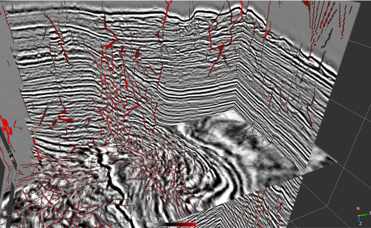
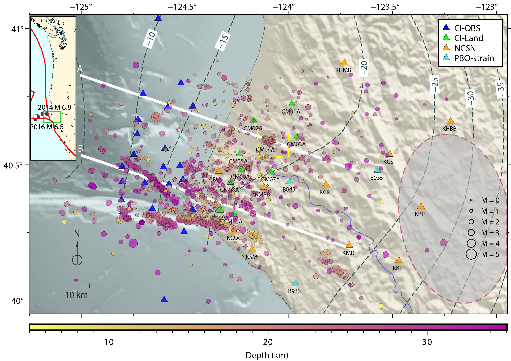

I am interested in using seismic waves to understand faults within the earth. Since faults are below ground we're limited to indirect methods such as seismology to learn about faults in-situ at depth. I am interested in using the information contained in seismic waves to learn about fault properties by sampling the earth both earthquakes and human created sources of seismic waves.
Active Source:
Under construction
Passive Source:
Under construction